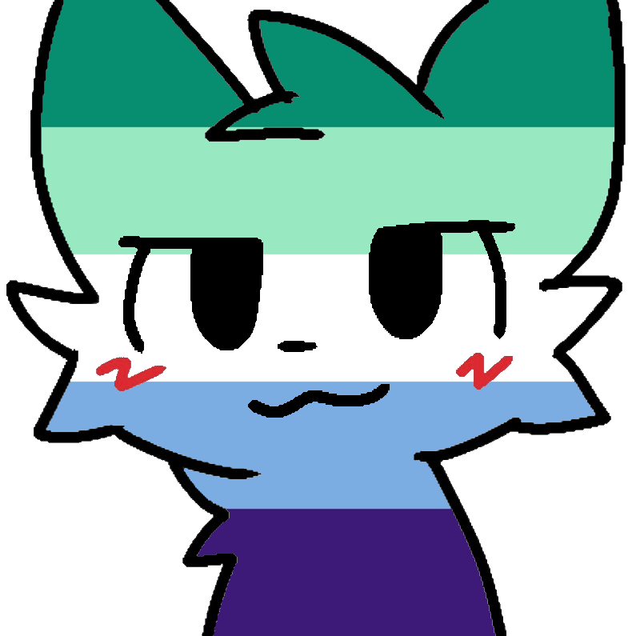

About Me
Hi! I'm Nesu, a non-binary hobbyist programmer from Poland who spends way too much time writing software that probably didn't need to exist. I have a soft spot for low-level systems, memory-safe code and making my setup unnecessarily complex.
I'm drawn to tools that are fast, lean and actually useful. That's how I ended up deep in Rust. When I'm not staring at a compiler error, you'll find me listening to music with way too much bass, fawning over jackdaws or sinking hours into a game with too many systems to manage.
I'm also part of the furry fandom! :3 and I'm hoping to turn this programming hobby into something full-time someday.
What I'm Into
Bass-heavy music
If the bass doesn't rattle something it doesn't count. Heavy, moody, chaotic. Yes please.
Corvids
Jackdaws & rooks specifically. Criminally underrated birds.
Psychology
How people think and why they do what they do.
Gaming
Love complex system-management games. If there's a tech tree and a reason to min-max, I'm in.
Furry fandom
Proud member :3
Anime
Toradora! lives rent-free in my head forever.
Rust & systems
Low-level stuff that probably didn't need to exist.
Linux
Arch, btw.
Projects
NTScan
ActiveFast Windows file & folder size scanner. Low-level NTFS traversal built for speed.
NTScan GUI
ActiveA graphical frontend for the NTScan library.
LLO
ActiveA Minecraft mod that shows light levels in an intuitive way.
Kity
Active-ish(?)The portable sister of Cathy. A small mobile catbox.moe client.